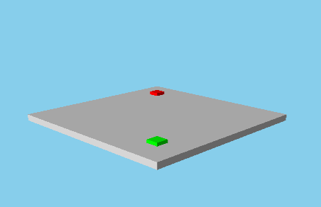

PerspectiveCamera QML Type
Defines a Perspective Camera for viewing the content of a 3D scene. More...
| Import Statement: | import QtQuick3D |
| Inherits: | |
| Inherited By: |
Properties
- clipFar : real
- clipNear : real
- fieldOfView : real
- fieldOfViewOrientation : enumeration
Detailed Description
A Camera defines how the content of the 3D scene is projected onto a 2D surface, such as a View3D. A scene needs at least one Camera in order to visualize its contents.
It is possible to position and rotate the Camera like any other spatial Node in the scene. The Node's location and orientation determines where the Camera is in the scene, and what direction it is facing. The default orientation of the Camera has its forward vector pointing along the negative Z axis and its up vector along the positive Y axis.

PerspectiveCamera is the standard Camera type. It gives a realistic projection of the scene, where distant objects are perceived as smaller. The frustum is defined by the fieldOfView property as well as near and far clip planes.
The following example creates a PerspectiveCamera at position [0, 200, 300] in the scene, a field of view of 90 degrees and with a 30 degree downward pitch.
PerspectiveCamera { position: Qt.vector3d(0, 200, 300) eulerRotation.x: -30 fieldOfView: 90 }
See also Qt Quick 3D - View3D Example, OrthographicCamera, FrustumCamera, and CustomCamera.
Property Documentation
clipFar : real |
This property defines the far clip plane of the PerspectiveCamera's frustum. Geometry which is further away from the Camera than the far clip plane will not be visible.
The default value is 10000.0. The unit depends on the user's geometry units, and the value is relative to the global camera position.
clipNear : real |
This property defines the near clip plane of the PerspectiveCamera's frustum. Geometry which is closer to the Camera than the near clip plane will not be visible.
The default value is 10.0. The unit depends on the user's geometry units, and the value is relative to the global camera position.
fieldOfView : real |
This property holds the field of view of the camera in degrees. This can be either the vertical or horizontal field of view depending on whether the fieldOfViewOrientation property is set to PerspectiveCamera.Vertical or PerspectiveCamera.Horizontal.
The default value is 60.0.
fieldOfViewOrientation : enumeration |
This property holds the orientation in which camera field of view is given.
| Constant | Description |
|---|---|
PerspectiveCamera.Vertical | The provided field of view is vertical, meaning the field of view is the angle between the line traced from the camera to the center top of the viewport and the line from the camera to the center bottom of the viewport. The horizontal aspect ratio will be adjusted to maintain aspect ratio. |
PerspectiveCamera.Horizontal | The provided field of view is horizontal, meaning the field of view is the angle between the line traced from the camera to the center left side of the viewport and the line from the camera to the center right side of the viewport. The vertical aspect ratio will be adjusted to maintain aspect ratio. |
The default value is PerspectiveCamera.Vertical.